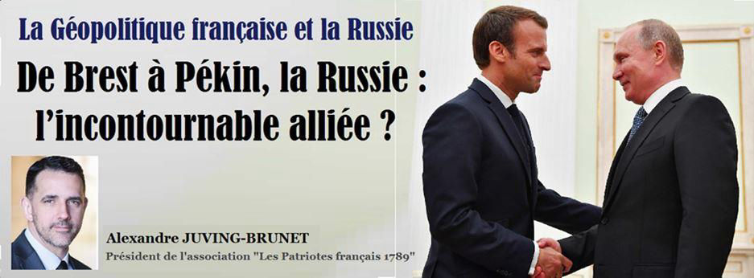
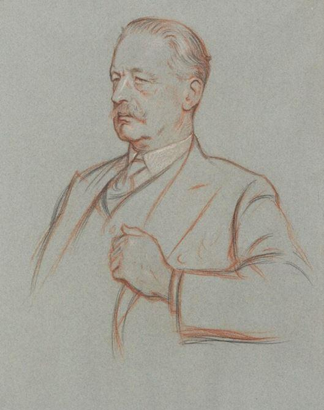
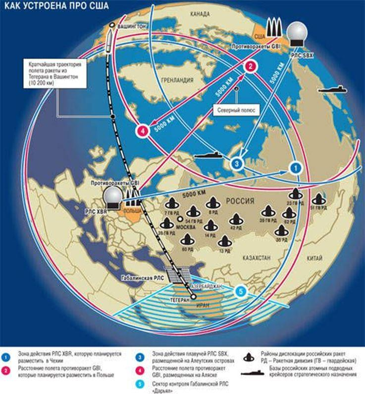
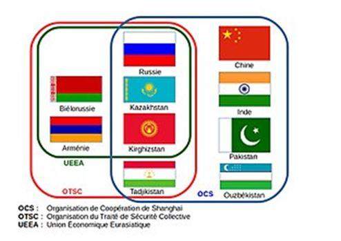
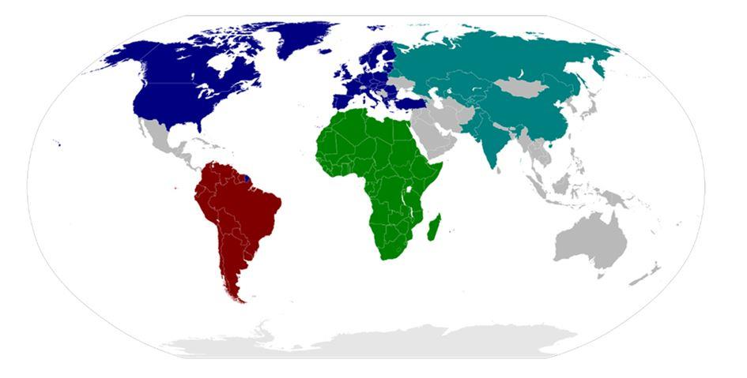
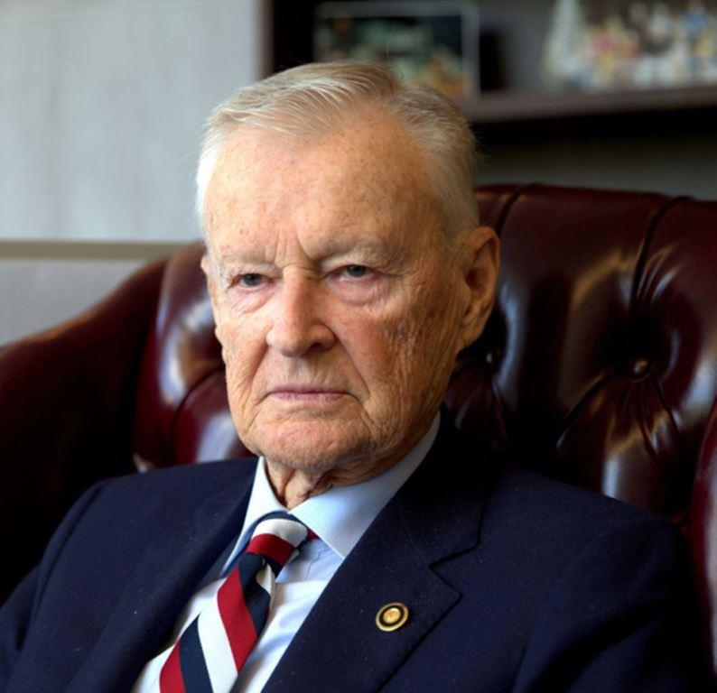
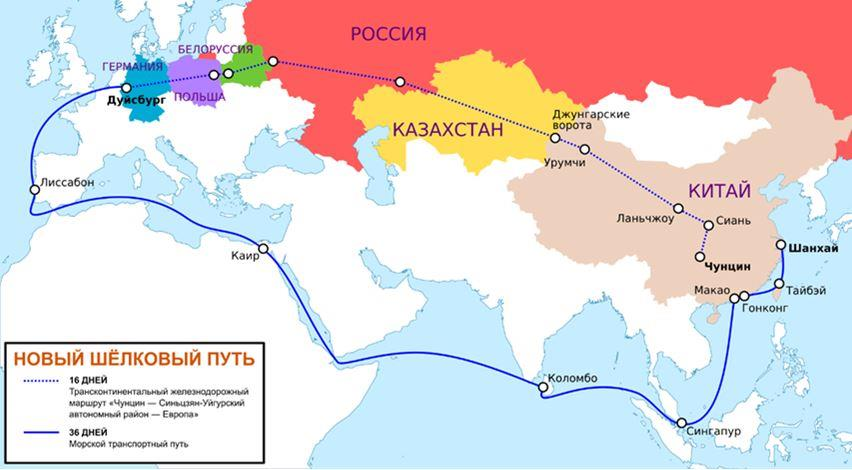

De Brest à Pékin, la Russie : l’incontournable alliée ?
par Alexandre JUVING-BRUNET

Europe, Russie, Moyen Orient, Inde et Chine…. Une mosaïque de peuples et de civilisations aux contrastes suffisamment forts pour rester désunis voire antagonistes. Désunis par les cultures, mais toutefois réunis par une même continuité territoriale que l’on peut parcourir sans traverser de mer depuis Brest jusqu’à Pékin.
 Crédits : National Portrait Gallery LondonCet ensemble représentant 4,9 milliards d’habitants (63 %) et occupant 54 millions de km² (soit 36 % des terres émergées) porte un nom stratégique connu de tous en géopolitique : l’Heartland1, autrement appelée « l’Ile-Monde » d’après Sir Halford John Mackinder2, géographe britannique et considéré comme un des pères de la géopolitique, qui d’ailleurs incluait l’Afrique dans cet édifice mondial.
Reprenant l’approche du grand navigateur Sir Walter Raleigh3 quand il déclare « « qui tient l’Europe orientale tient le heartland, qui tient le heartland domine l’île mondiale, qui domine l’île mondiale domine le monde »,
MacKinder inspira notamment le non moins célèbre Nicholas Spykmann4, un des pères de la géopolitique cette fois-ci américaine qui concentrera sa pensée stratégique non plus sur le Heartland, mais bien le Rimland ou « Croissant Intérieur » en postulant que la domination des mers et le contrôle de « marches » sur tout le pourtour eurasiatique permettra aux États-Unis d’Amérique d’assurer sa suprématie sur le Monde.
Cette lecture stratégique met en lumière tous les conflits de la guerre froide qui a émaillé la seconde partie du XXe Siècle et la rivalité américano-soviétique pour le contrôle du Heartland et du Rimland entraînant la chute de la Russie soviétique qui dominait alors le plus vaste espace intégré (URSS). Et Ce Rimland est toujours ancré dans l’esprit stratégique américain tant et si bien que jusqu’à la présidence de Donald Trump, jamais les États-Unis n’avaient aussi loin avancé leurs pions sur le Grand Echiquier mondial, poussant les Russes à déclencher manu militari la partition de l’Ukraine afin de sanctuariser la base militaire de Sébastopol en Crimée, garante de leur accès aux mers chaudes. Le rimland américain, observable par la cartographie de déploiements de missiles anti-ballistiques n’est pas différent des « Limes » des Empires qui se sont succédés sur Terre, de Gengis Khan à Napoléon en passant par Charlemagne. Et les Empires connaissent apogées, mais aussi décadences et chutes.

Cartographie extraite des manuels de stratégie russe. La perception russe des déploiements de missiles et de systèmes anti-ballistiques.
Mais les cartes géopolitiques, prétendument intangibles selon Francis Fukuyama5 parlant de « Fin de l’Histoire », ont de facto été rebattues par une Chine, tout d’abord réveillée de sa léthargie millénaire, puis dans les années 2000 avec les transferts technologiques et financiers accélérés par la cupidité de l’aristocratie financière et industrielle occidentale, déterminée à jouer un rôle géopolitique de premier plan par le renforcement vigoureux de ses « Hard & Soft Power » 6, lui permettant de préparer une passation de pouvoir mondiale avec les États-Unis d’Amérique.
Mais ce déplacement de la polarité stratégique planétaire ne sera parachevé que par la réunion du Heartland selon une continuité territoriale passant inévitablement par la Russie. Donc la Russie, auparavant grande perdante de la Guerre Froide, pourrait redevenir l’arbitre incontournable non pas des élégances, mais des puissances. Et Vladimir Poutine s’y est employé avec constance depuis son accession au Pouvoir en 2000 après la débâcle libérale des années Elstine qui avait mis la Russie à genoux, offrant aux États-Unis d’Amérique l’atteinte prochaine de son but stratégique souverain : le contrôle du pivot du Heartland, autrement dit la Russie. Sauf que l’État profond russe tenu par la techno-structure FSBiste (ex-KGBiste) et mené par leur ancien colonel Vladimir Vladimirovitch Poutine a mis un terme à ce dépeçage en règle par une contre-offensive visant à neutraliser toute entité ou personne nuisant aux intérêts supérieurs du Peuple russe et de ses représentants.
Face à l’Otan et la disparition du Pacte de Varsovie à la fin de la guerre froide, Chine et Russie sont devenues des alliés objectifs, initiateurs de l’Organisation de la Conférence de Shanghai (OCS7) et dans un sens dignes héritières des non-alignés de la Guerre Froide, pour diminuer d’autant un impérialisme américain, à bout de souffle financier et arc-bouté sur une avance technologique dorénavant à parité avec la Chine.
Ne reniant pas les préceptes de la RealPolitik chère à Kissinger8, et bien conscients de leurs atouts stratégiques respectifs, profondeur territoriale et richesse minière pour la Russie, démographie et terres rares (95%) pour la Chine, ils ont très tôt établi les bases d’un partenariat stratégique solide ou duopole (que des observateurs critiquèrent par le vide laissé dans le dossier afghan) couvrant tout le spectre de la stratégie intégrale telle que l’avait théorisée le général Lucien Poirier9 avec une prédominance militaire, diplomatique et économique.
Si les Américains affectionnent culturellement le poker et les Chinois le Mah-Jong, les Russes quant à eux sont les champions incontestés des échecs, et nous disputent à nous Français nos plus brillants esprits mathématiques et scientifiques. Méthodiques, rationnels avec quelques élans romantiques surannés qui nous rappellent un certain esprit Français, les Russes, guidés depuis 20 ans par un Vladimir Poutine conforté par une récente réforme institutionnelle plébiscitée10 l’autorisant à « régner » jusqu’en 2036 a posé les bases profondes de son retour fracassant sur la scène géopolitique. Forces Armées restructurées et modernisées qui firent la preuve sur le théâtre syrien de leur excellence retrouvée, économie strictement régulée avec des faiblesses structurelles (diversification en souffrance qui impacte durement son économie en cas de crise) mais dont les fleurons industriels ont été sanctuarisés tout en consolidant les réserves d’or, enfin une démographie relancée par une politique de santé publique forte qui a interrompu la saignée observée dans la décennie quatre-vingt-dix11 : la Russie a préparé son retour dans le concert des puissances.
Et ce retour, la France ne saurait l’ignorer. L’ignorer, mais aussi l’encourager et l’accompagner pour mieux paver la voie à un rapprochement stratégique que les Allemands n’ont pas dédaigné bien avant nous. Nous devons reprendre l’initiative diplomatique en s’affranchissant de la tutelle américaine qui ne doit plus téléguider un Quai d’Orsay, pourtant héritier du ténébreux Talleyrand.
Nos élites politiques, biberonnées et formées à l’américaine sont les agents « malgré eux » d’une puissance étrangère, certes alliée, mais dont les objectifs stratégiques demeurent nationaux et américano-centrés : l’Union Européenne pour l’unification d’un marché captif déversoir des produits américains et récipiendaire de notre fuite des cerveaux consacrés par le CETA12, et l’OTAN13 pour l’intégration militaire restent les deux vecteurs privilégiés du contrôle américain de nos destinées françaises et européennes.

Représentation des grandes alliances internationales en 2020 (OTAN, OCS, Alliance Africaine, UNASUR).
La Russie, de taille continentale mais de souche originelle européenne le sait parfaitement et désespère de pouvoir se rapprocher d’une Europe dont elle partage la culture judéo-chrétienne, malgré sa « tentation » orientale alimentée par l’ouverture pratiquée par la Chine principalement, et l’Inde dans une moindre mesure.
Car ce rapprochement, possible préalable à la convergence de « l’île-monde » terrestre signerait la fin durable de la domination américaine et un vrai basculement ouvrant une nouvelle ère géopolitique. Voilà la Terreur qui inspire nombre de politiques américaines et atlantistes depuis plus d’un siècle. Car cette Eurasie, souhaitée ou honnie, disposerait demain de toutes les ressources démographiques, technologiques, minières et agricoles pour prétendre ostraciser l’Hyper-puissance14 américaine et ses élans historiques contradictoires, de phases expansionnistes et impérialistes en replis sur soi.
Cette peur est le ciment d’une stratégie bien coordonnée, vulgarisée par Zbignew Brzezinksi15 reprenant à son compte les travaux des stratégistes cités supra. Brzezinzki dans son ouvrage se fait d’ailleurs l’avocat d’une construction européenne construite sur la dorsale France-Allemagne-Pologne, Nations incontournables à l’établissement d’une Europe vassalisée et dépendante des États-Unis d’Amérique.
Or l’Europe est aussi le continent des vieux Empires et puissances dont les atouts sont toujours immenses, avec une France, dont les traditions universaliste et expansionniste avaient été assumées par un De Gaulle qui avait œuvré aux conditions de sa souveraineté et de son indépendance stratégique (parapluie nucléaire national en réaction au traumatisme de l’opération de Suez, relance de plans industriels énergétiques et technologiques permettant de rester au diapason des grandes puissances existantes ou émergées). Fort de ces grands chantiers menés tambour battants à une époque où la décolonisation fit rage, De Gaulle put à la fin de son ère planter les graines d’une politique indépendante où la France retrouvait un crédit et une voix pour propager sans honte ses principes matriciels de Liberté, d’Égalité et de Fraternité, tout en consolidant son rôle d’arbitre international entre les puissances, rôle désormais disparu ou torpillé par l’alignement aveugle des derniers présidents français sur une vulgate atlantiste menant à une déstabilisation inquiétante d’États en construction ou en voie de modernisation. A ce titre, la rupture opérée sous Nicolas Sarkozy avec son prédécesseur Jacques Chirac concernant la politique arabe et méditerranéenne de la France est sans conteste observée comme une tentative coordonnée de détruire toute la tradition politique des régimes dits « nassériens », avec à leurs têtes des partis laïcs et musclés16 (courant baassiste en Lybie, Égypte, Syrie et Irak). En fut-il de même vis-à-vis de la Russie ?
Sous Nicolas Sarkozy toujours, la France se fit la porte-parole de peuples traditionnellement sous l’aire d’influence russe (affaire géorgienne notamment) car appartenant à l’espace ex-soviétique. Mais les tentatives françaises d’influence sur la Russie restèrent vaines : la médiation de Nicolas Sarkozy quand la France présidait à l’Union Européenne pour officiellement parvenir à un accord masque difficilement la victoire tactique et politique russe aboutissant à une reconnaissance de l’Ossétie du Sud et de l’Abkhazie par la Russie se disant prête à les défendre : le glacis russe est toujours présent et seuls les États-Unis soutenant les séparatistes ukrainiens essaieront une nouvelle fois de déstabiliser un ex-État satellite (annexion de la Crimée et reconnaissance unilatérale de son rattachement à la Russie) dans leur obsession du contrôle d’un Rimland toujours plus profond.
Ces guerres tactiques et escarmouches stratégiques n’ont fait que convaincre Vladimir Poutine de miser toujours plus sur un renforcement à l’Est, éloignant durablement la possibilité d’un rapprochement avec la France et le continent européen.
Mais la Chine considère l’Europe et la France comme des marchés stratégiques de débouchés commerciaux mais aussi de contrôle de flux financiers (rachat massif d’établissements bancaires notamment au Luxembourg) et cette orientation stratégique pourrait ramener naturellement la Russie dans le concert européen. Voilà pourquoi la Chine, souhaitant contourner le contrôle des mers qui demande l’entretien d’une flotte de guerre ne pouvant rivaliser avec l’expérience et la puissance américaines, a massivement investi dans les nouvelles routes de la Soie17.
Ces nouvelles routes de la Soie préfigurent ce qu’aucune puissance n’aurait imaginé voilà encore un siècle : la connexion intégrale mer/rail/route de tout l’ensemble eurasiatique. Ainsi, deux blocs apparaîtraient très clairement : celui contrôlé par la bannière américaine avec le CETA et l’OTAN, l’autre par la bannière rouge étoilée avec l’OCS et les routes de la Soie. L’Europe est donc l’enjeu et le point d’achoppement de ces deux titans et la France, porte d’entrée, isthme et finistère du continent eurasiatique, y tiendra une place éminente mais sera fatalement l’objet de frictions quasi-tectoniques qui lui demanderont de s’entourer d’alliés. Et voici que réapparaît la carte russe et la problématique des relations franco-russes.
Car brillamment contées et analysées par Hélène Carrère d’Encausse18, les relations franco-russes, autant façonnées par les raisons d’État que les passions frustrées, conservent une vivacité jusque dans les imaginaires collectifs de nos deux Peuples. Il m’a été offert de le constater quand, étudiant international au titre d’un échange entre le MGIMO (Sciences-Po russe) et Saint-Cyr, j’ai pu échanger avec de nombreux Russes de tous les âges avouant secrètement leur fascination pour la France, me racontant leur plaisir de visionner les films de De Funès ou encore de discourir en Français avec un chauffeur de taxi septuagénaire ! Le Peuple russe apprécie donc grandement la France. Cette conscience collective, nul doute que Vladimir Poutine la comprenne également, même si sa prime « formation » au KGB l’amena à s’intéresser à l’Allemagne (il fut officier traitant à Dresde à la chute du Mur en 1989).
Aussi la France ne doit-elle plus tarder à rebâtir une relation de confiance durable et indépendante vis-à-vis ce « pays-continent » qui arrimera la Chine à l’Europe et permettra la constitution du Heartland malgré toutes les stratégies dilatoires qui seront mises en place par les États-Unis d’Amérique qui doivent conserver notre amitié, notre respect et notre collaboration sous condition d’une souveraineté française retrouvée et sanctuarisée. Cette relance de la coopération franco-russe doit s’établir avec les prudences nécessaires et en veillant aux intérêts français : la Russie se projette depuis des Siècles comme cette 3e et dernière Rome, capitale universelle des Hommes. La pensée russe est donc une pensée également universaliste et expansionniste que nous Français partageons et comprenons mais dont nous devons nous méfier.
Si demain la France redevenait la cheffe de file d’une Europe d’États-Nations inféodée aux États-Unis et à l’OTAN, alors oui nous pourrions aspirer à la création d’un axe Paris – Moscou – Pékin que la France pourrait utiliser à son avantage dans un rééquilibrage de puissances, l’Europe n’ayant pas permis à la France de tirer parti d’une communauté élargie dont a bénéficié en premier lieu l’Allemagne. Nous devons donc reprendre une initiative stratégique, diplomatique, économique et militaire permettant de recouvrer notre liberté d’action et briser la sujétion déguisée de la France.
A. J-B.
NOTES ET RÉFÉRENCES
1. Heartland ou « Ile-Monde » concept extrait d’une citation de Mackinder :
« Who rules East Europe commands the Heartland;
who rules the Heartland commands the World-Island;
who rules the World-Island controls the world. »
« Qui contrôle l'Europe de l'Est contrôle l'Heartland ;
Qui contrôle l'Heartland contrôle l'Île Monde ;
Qui contrôle l'Île Monde contrôle le monde. »
2. Sir Halford John Mackinder, Geography and History, Londres, 1905
3. Sir Walter Raleigh, the History of the World, Londres, 1614
4. Nicholas Spykmann, America's Strategy in World Politics, the United States and the Balance of Power, 1942.
5. Francis Fukuyama, La Fin de l'histoire et le Dernier Homme, Paris, Flammarion, coll. Histoire, 1992, p.452
6. Joseph Nye, Soft Power: The Means to Success in World Politics, PublicAffairs, 2004
7. OCS, Organisation de la Conférence de Shanghaï, traité signé le 15 juin 2001 pour succéder au groupe de Shanghaï fondé le 26 avril 1996.
8. Henry Kissinger, Diplomatie, traduction de Marie-France Paloméra, Fayard, 1996.
9. Lucien POIRIER, Les sept épées, cahiers n°22 de la Fondation pour les Etudes de la Défense Nationale, 2e trimestre 1982.
Évolution du PIB Chine / USA / Chine depuis 1990, Source Banque Mondiale
12. CETA, Comprehensive and Economic Trade Agreement, Accord Economique te Commercial Global signé le 21 septembre 2017.
13. OTAN, Organisation du Traité de l’Atlantique Nord, signé le 4 avril 1949
14. Hubert védrine utilisant pour la première l’expression d’hyperpuissance pour désigner les Etats-Unis en 1992 : « Le premier grand problème concerne en premier lieu le rôle et la place des États-Unis et leurs relations avec l'Europe. Pour ma part, j'estime que depuis 1992 le terme de « superpuissance » ne suffit plus pour décrire les États-Unis. Terme trop connoté à la guerre froide et trop exclusivement militaire, alors que la suprématie américaine d'aujourd'hui s'exerce aussi bien sur l'économie, la monnaie, la technologie, les domaines militaires que sur les modes de vie, la langue et les produits culturels de masse qui submergent le monde, modelant les pensées fascinant jusqu'aux adversaires des États-Unis. C'est pourquoi j'emploie le terme d'« hyperpuissance » que les médias américains jugent agressif en raison de la connotation pathologique d'hyper, alors qu'il n'est que descriptif. »
15. Zbigniew Brzezinksi in Le Grand Echiquier : l’Amérique et le reste du Monde, Bayard, coll. « Actualité », 1997 édition poche Fayard, coll. « Pluriel », 2011
16. Baas, courant politique panarabe théorisé par MM. Michel Aflak, Salah Edine Bitar et Zaki Al-Arzouzi.
17. La nouvelle route de la Soie, autrement appelé la ceinture et la route ou OBOR (One Belt, One Road), considéré comme le pendant terrestre de la stratégie maritime chinoise dite du « Collier de Perle ».
18. Hélène Carrère d’Encausse, La Russie et la France : de Pierre le Grand à Lénine, Paris, Fayard, 2019.
Partager cette page